～福井県&岐阜県&石川県&富山県編～
2023年11月2日～6日に北陸を旅行した記事になります！
日本海側の海鮮やご当地の牛肉も紹介しているので
北陸旅行のモデルコースの参考になれば幸いです！
▶ 今回の旅の目次
氣比神宮
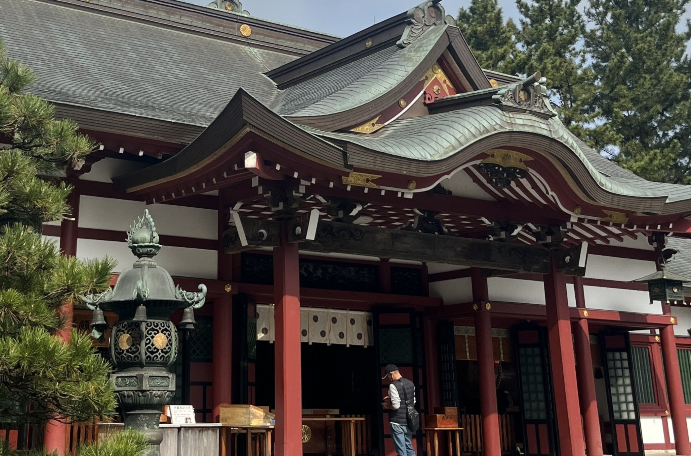
7柱のご祭神をまつる北陸道の総鎮守として有名な氣比神宮！
鳥居は国の重要文化財にも登録されています！
気比神宮
営業時間：4月～9月 5:00～17:00
10月～3月 6:00～17:00定休日：なし
駐車場：あり
住所：福井県敦賀市曙町11-68
かに喰亭 ますよね
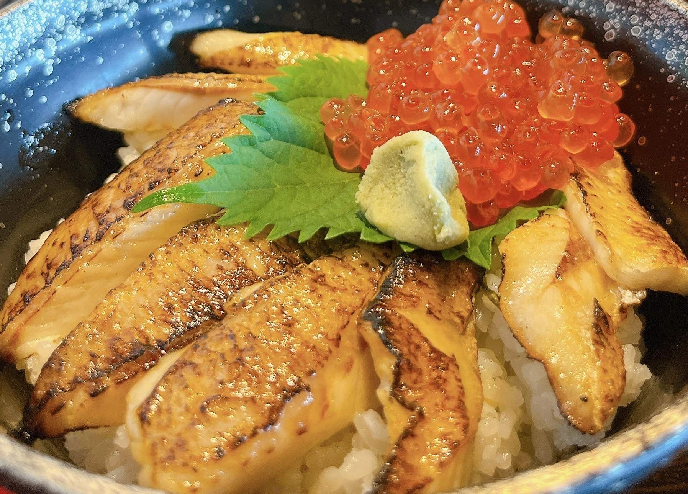
のどぐろの炙りにいくらが乗っている贅沢な一品！
炙りにより旨味が増しているのどぐろを堪能できます！
かに喰亭 ますよね
営業時間：10:30～17:30
定休日：1月1日のみ
予約可否：予約可
駐車場：あり
TEL：0770-22-3590
住所：福井県敦賀市若葉町1丁目1531番地 日本海さかな街内
URL：
ホットペッパーで見る
ふるなび：
福井県敦賀市のふるさと納税を見る
現存12天守のひとつ！丸岡城！
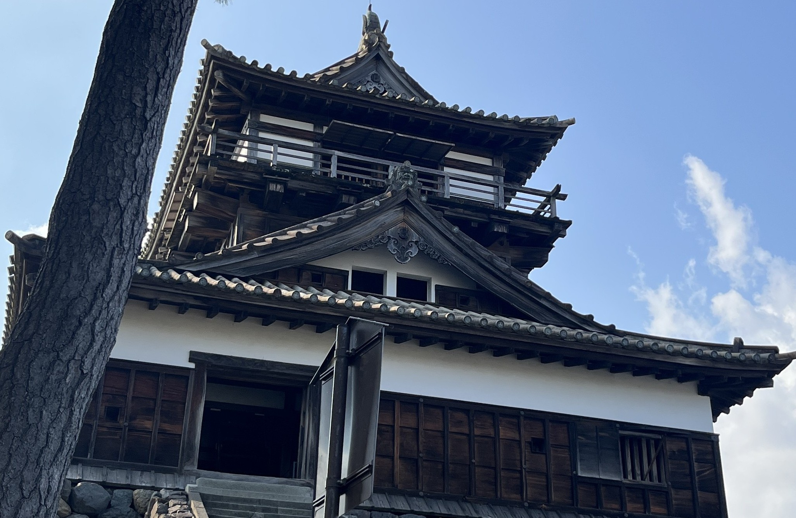
現存12天守で唯一屋根が石瓦で葺かれている丸岡城！
江戸時代以前に建設された天守が今も残る貴重なお城です！
天空の城！越前大野城！
標高249mにそびえる平山城の越前大野城！
10月から4月頃は明け方に雲海が城下を覆うことがあり
まさに天空の城といった神秘的な景色になります！
越前大野城
営業時間：4月～9月 9:00～17:00
10月～11月 9:00～16:00定休日：12月1日～3月31日
駐車場：あり
住所：福井県大野市城町3-109
URL： 越前大野城公式サイト
新鮮なお寿司を回転ずしで！番やのすし！
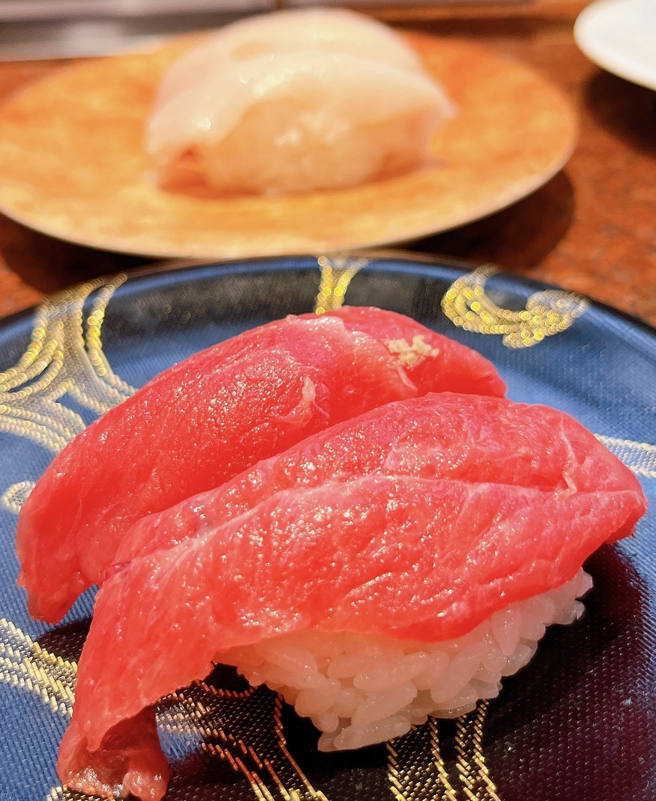
富山湾の海鮮を楽しめる回転ずしチェーンの番やのすし！
全てのお寿司が新鮮で美味しく
特にのどぐろの炙りと寒ブリは最高でした！
富山名産のカツオの藁焼きもとても美味しくオススメです！
番やのすし 吉沢店
営業時間：11:00～15:00
17:00～21:00定休日：不定休
予約可否：予約不可
駐車場：あり
TEL：076-436-1703
住所：富山県富山市古沢413-2
URL： 食べログで見る
ふるなび：
世界遺産の村！白川郷！
世界遺産にも登録されている合掌造り集落の白川郷！
飲食店やおみやげ屋さんも多くあるので
お土産の購入に最適です！
民宿等の宿泊施設もあるため
世界遺産に泊まりたい方は是非ご利用ください！
東海地区最大級の石灰洞窟！大滝鍾乳洞！
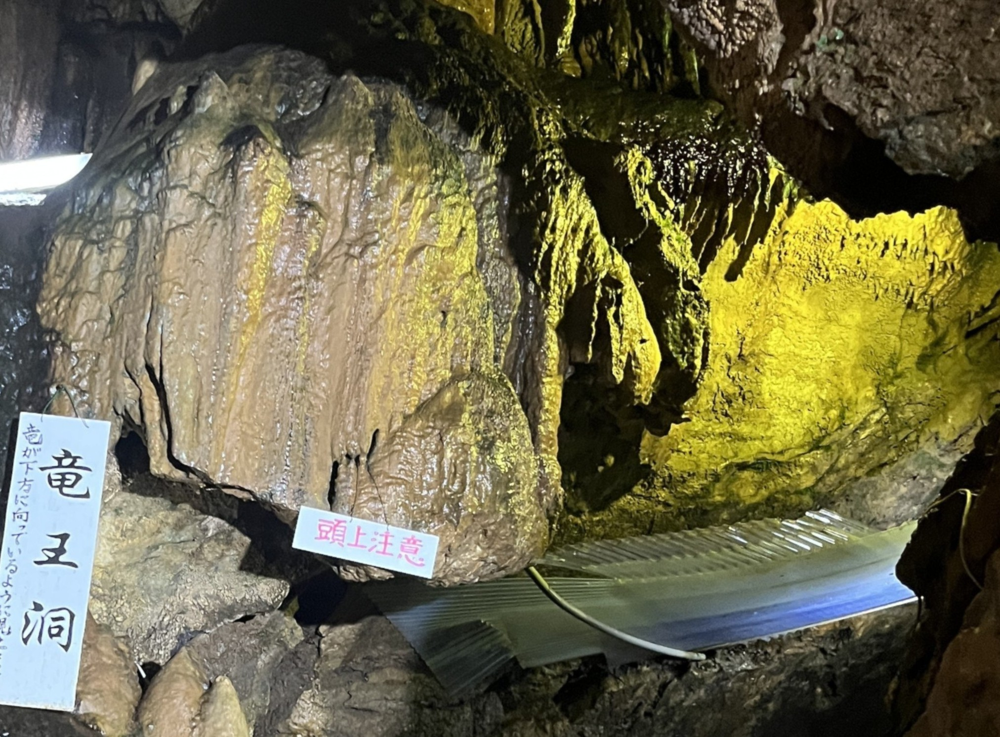 観光は700mの鑑賞コースですが
現在の調査では全長約2kmの通路が確認されている
とても大きな鍾乳洞です！
シンボルである神秘の滝はその名の通り荘厳で神秘的な滝で
滝までたどり着いたときの感動は忘れられません！
飛騨牛一頭買いの焼肉屋！馬喰一代！
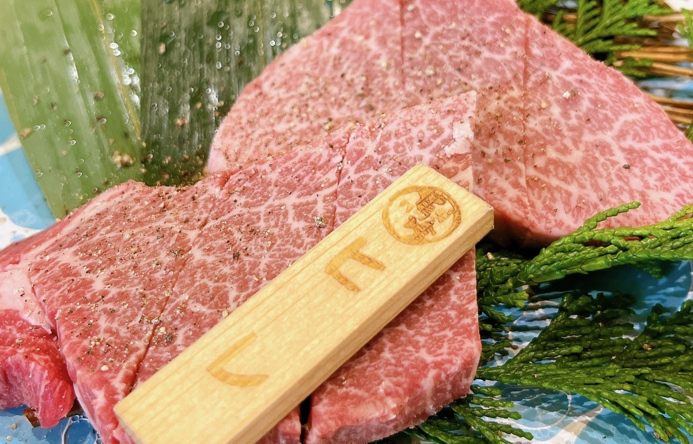
最高の飛騨牛が食べれる馬喰一代！
飛騨牛を一頭買いしているため
様々な部位を新鮮に頂くことができます！
牛刺しのような新鮮でないと食べることがないメニューもあり
飛騨牛にぎりやユッケは無限に食べれる程美味しかったです！
馬喰一代(ばくろいちだい) 長良本家
営業時間：11:30～15:00 17:00～23:00(平日)
11:00～23:00(土日祝)定休日：なし
予約可否：予約可
駐車場：あり
TEL：058-232-4129
住所：岐阜県岐阜市八代2-7-10
URL：
食べログで見る
ふるなび：
1000年の歴史を持つ神社！千代保稲荷神社！
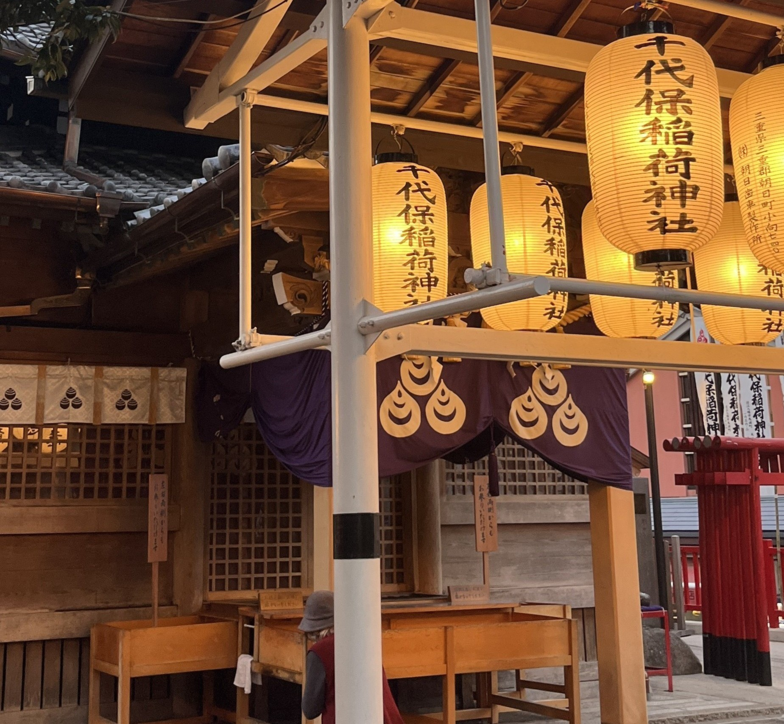
おちょぼさんの愛称で親しまれている千代保稲荷神社！
月末には月越し参りで県外からも
たくさんの方がお参りに来るそうです！
重要文化財の社殿！尾﨑神社！
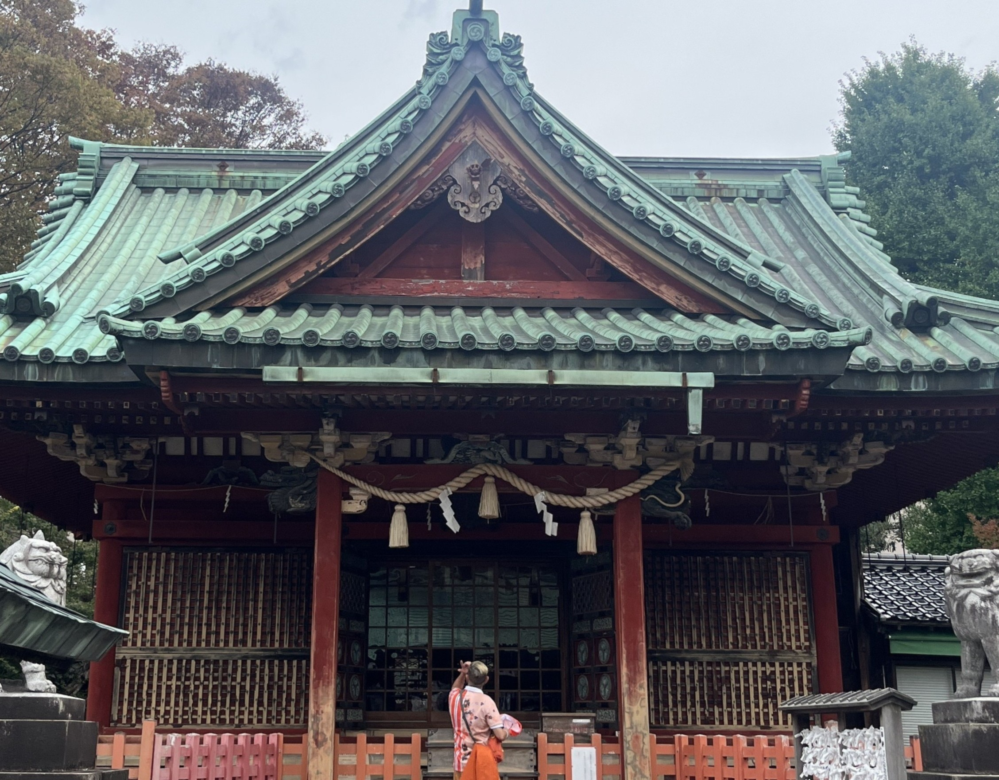
徳川家康(東照大権現)をお祀りする尾﨑神社！
東照宮建築の社殿を持つため別名「金沢東照宮」とも言われ
重要文化財に指定されています！
前田利家公をお祀りする神社！尾山神社！
前田利家公と正室のお松の方をお祀りする尾山神社！
最上階にギヤマン(ガラス)がはめ込まれ非常に美しい神門は
重要文化財にも指定されており
日本現存最古の避雷針が施されています！
加賀百万石のお城！金沢城！
加賀百万石で有名な金沢にある金沢城！
1788年に再建された石川門は
重要文化財に指定されています！
金沢城
営業時間：3月1日～10月15日 7:00～18:00
10月16日～2月末 8:00～17:00定休日：なし
駐車場：あり 普通車：1時間350円 30分ごと150円
住所：石川県金沢市丸の内1番1号
URL： 金沢城公園公式サイト
ふるなび：
1300年以上の歴史を持つ古社！杉原神社！
夫婦円満や縁結びの神社として有名な杉原神社！
境内にある水分(みくまり)神社で洗財(せんざい)を行うと
金運が上がると言われています！
富山県の守り神！富山縣護國神社！
富山県民に親しまれている富山縣護國神社！
毎月第一日曜日は富山のみの市というイベントがあり
特産物や骨とう品など様々なものを買うことができます！
氷見牛を丼で頂く！極 BanGyu！
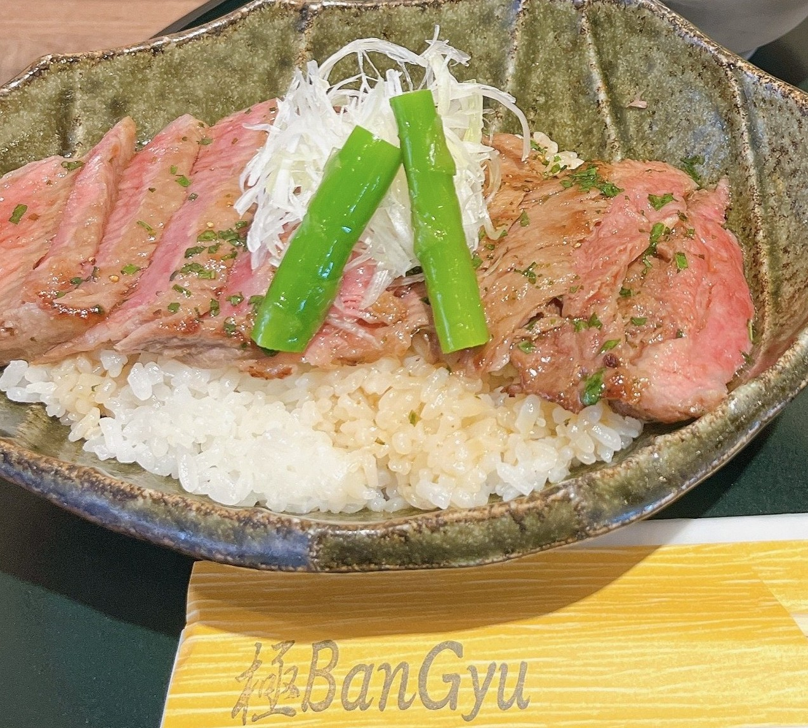
富山県氷見市の名産の氷見牛を丼で頂ける極 BanGyu！
肉厚の氷見牛の美味しさと薬味のネギの相性が最高でした！
極 BanGyu
営業時間：8:30～19:00
定休日：1月1日
予約可否：予約不可
駐車場：あり
TEL：0766-75-3973
住所：富山県氷見市北大町25-5 ひみ番屋街 フードコート
URL： 食べログで見る
ふるなび：
氷見の海鮮が楽しめる！食彩居酒屋 灘や！
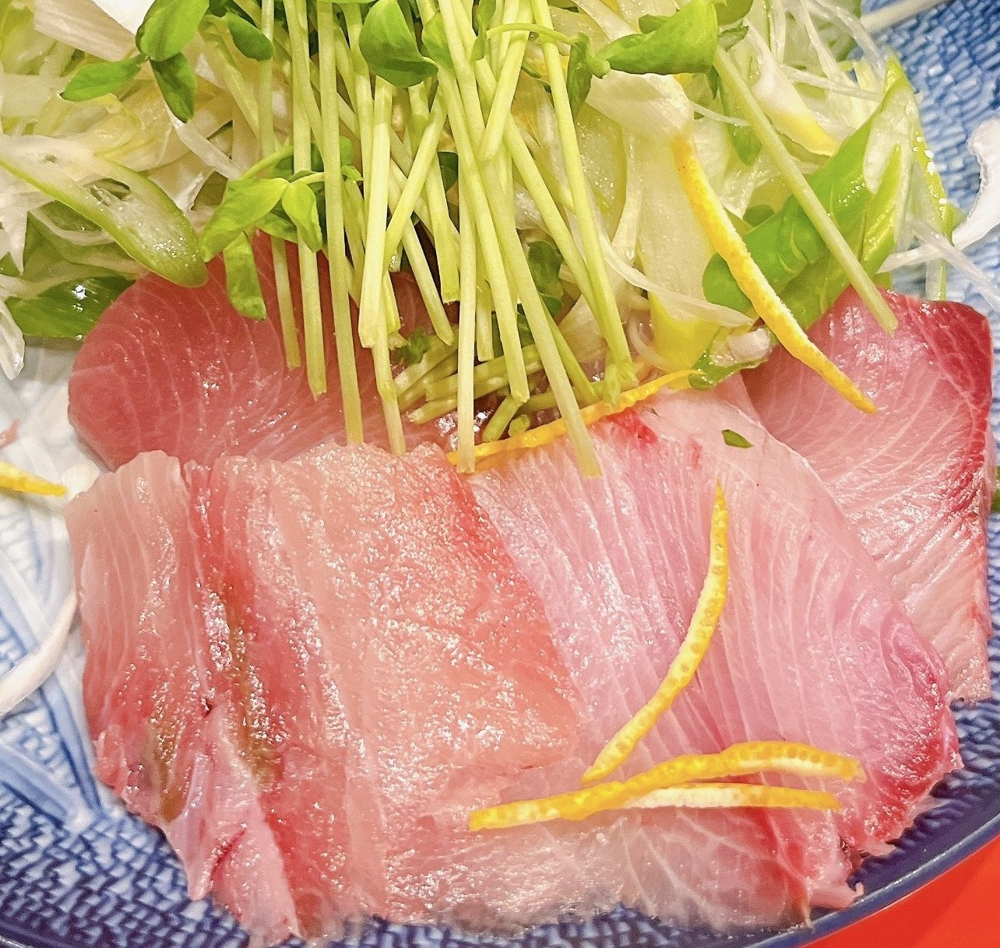
氷見でとれた海鮮が楽しめる灘や！
新鮮で旨味の詰まったブリを使用した
ブリしゃぶは筆舌に尽くし難い美味しさで
ブリ本来の美味しさを余すところなく楽しめます！
食彩居酒屋 灘や
営業時間：11:30～14:00 17:30～23:00
定休日：木曜日
予約可否：予約可
駐車場：あり
TEL：0766-72-0424
住所：富山県氷見市本町13-10
URL：
楽天市場：
楽天で富山県産のブリを見る
最高鮮度の魚を頂ける！魚市場食堂！
氷見港にお店がある魚市場食堂！
1階が魚市場のため競り落とされた鮮魚をすぐに頂けます！
最高の鮮度で臭みが全くない海鮮丼は最高に幸せでした！魚市場食堂
営業時間：6:30～15:00(月・火・水・木・金)
6:30～15:30(土・日)定休日：1月1日～1月3日
予約可否：予約不可
駐車場：あり
TEL：0766-72-2018
住所：富山県氷見市比美町435
URL： 食べログで見る
楽天市場：
重要文化財の神社！氣田神社！
西暦732に能登国一宮気多大社より
御分霊を勧請された氣田神社！
現在の本殿は1558年～1569年に再建された
歴史ある神社となります！最高の氷見牛を焼肉で！氷見牛専門店 たなか！
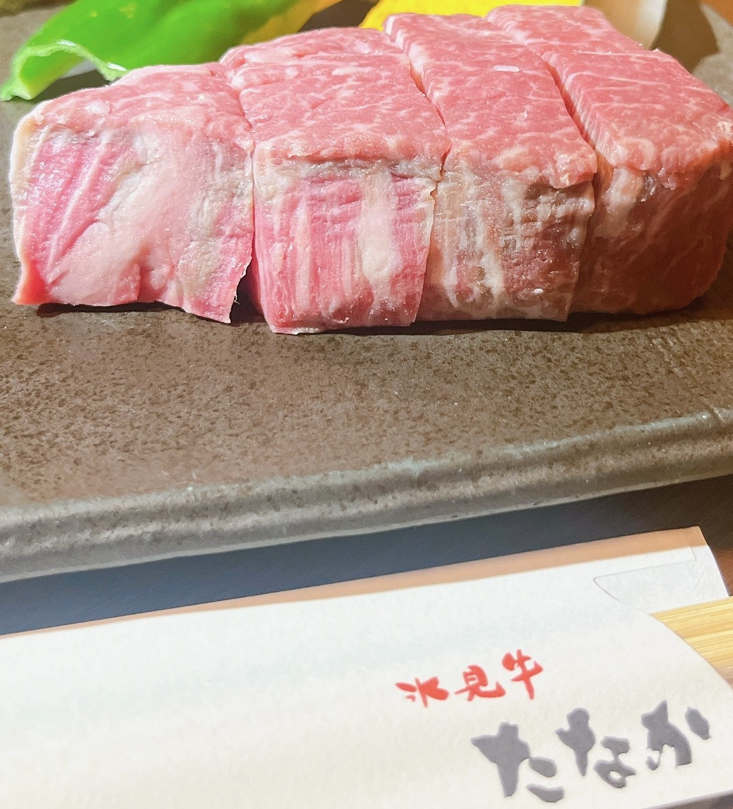
直営牛舎の氷見牛を使用した氷見牛専門店たなか！
焼肉以外にもしゃぶしゃぶやすき焼きも楽しめるお店です！
脂身のくどさがなくさっぱりしており
噛みしめるたびに感じる美味しさは最高で無限に食べれます！氷見牛専門店 たなか
営業時間：11:30～15:00 17:00～21:30
定休日：水曜日、第1・3火曜日
予約可否：予約可
駐車場：
TEL：050-5869-6685
住所：富山県氷見市朝日ヶ丘3931-1
URL： 食べログで見る
ふるなび：
走行距離
いかがでしたでしょうか！
今回は3泊4日で約2,150kmと走行距離も長かったです！
富山県の立山のホテルに3泊したのが
走行距離が長くなった原因です(笑)
金沢の観光はどこのお店も混んでいて
なにも食べれずじまいだったので
絶対にリベンジしたい旅行となります！
金沢のホテル日航にある能登牛を頂ける鉄板焼き銀杏や
2ヶ月前に予約が必要なお寿司屋さんの乙女寿司は
数年以内に絶対に行くと決めています！